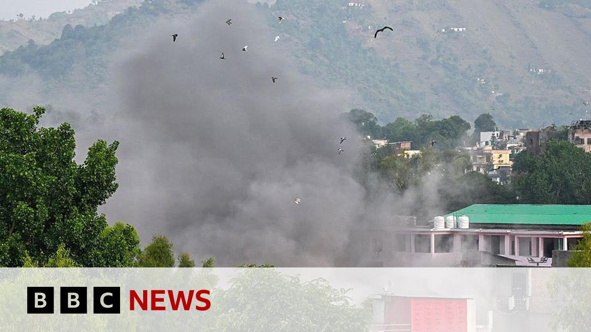

来B站一起耍【Global每日英语简报】
【巴基斯坦誓言对印度导弹袭击作出回应 | BBC新闻】
Summary: Pakistan accuses India of killing 26 people in missile strikes, escalating tensions between the nuclear-armed neighbors. India claims it targeted terrorist infrastructure, while Pakistan denies involvement and reports civilian casualties.
摘要： 巴基斯坦指责印度在导弹袭击中造成26人死亡，加剧了两个拥核邻国之间的紧张局势。印度称其目标是恐怖分子设施，而巴基斯坦否认参与并报告平民伤亡。

⏱️ Estimated Reading Time: 7 min
Hello, welcome to the program.
大家好，欢迎收看本期节目。
I'm Lewis For Jones.
我是刘易斯·琼斯。
Pakistan has accused India of igniting an inferno in the region by killing at least 26 people in a series of missile strikes and gunfire.
巴基斯坦指责印度通过一系列导弹袭击和枪击造成至少26人死亡，点燃了该地区的战火。
Several sites in Pakistan and Pakistan administered Kashmir were hit, including this mosque.
巴基斯坦和巴控克什米尔的多个地点遭到袭击，包括这座清真寺。
The National Security Council says India's actions caused grave danger to commercial airlines, endangering thousands of lives, and that Pakistan's armed forces have been authorized to undertake corresponding action.
巴基斯坦国家安全委员会表示，印度的行动对商业航班构成严重威胁，危及数千人的生命，并授权巴基斯坦武装部队采取相应行动。
Well, India said it hit nine sites targeting what it described as terrorist infrastructure.
印度表示，其袭击了九个目标，目标是其所谓的恐怖分子设施。
Said no military facilities had been attacked.
称没有军事设施遭到袭击。
also says 10 civilians were killed by Pakistan shelling on the Indian side of the de facto border in Kashmir known as the line of control.
还表示，10名平民在克什米尔实际边界（即控制线）的印度一侧被巴基斯坦炮击打死。
While tensions between the nuclear armed neighbors have escalated since last month's attack in Indian administered Kashmir in which 26 civilians were killed.
自上月印控克什米尔袭击事件造成26名平民死亡以来，这两个拥核邻国之间的紧张局势升级。
India accuses Pakistan of backing crossber terrorism a charge Islamabad strongly denies.
印度指责巴基斯坦支持跨境恐怖主义，伊斯兰堡对此强烈否认。
While in Masafrabad in main city in Pakistan administered Kashmir, troops cordoned off streets around that mosque that Islamabad said was hit by an Indian missile.
在巴控克什米尔主要城市穆扎法拉巴德，军队封锁了伊斯兰堡称遭印度导弹袭击的清真寺周围的街道。
BBC urg Javad sent this.
BBC记者贾瓦德发回报道。
Just few meters from here is the Bilal mosque uh which was one of the targets of Indian uh strikes last night.
距离这里仅几米远的就是比拉勒清真寺，它是昨晚印度袭击的目标之一。
This whole area has been cordoned off.
整个区域已被封锁。
There's a heavy presence of the troops of Pakistan army and other security forces here who are not allowing anyone to uh go past this point.
巴基斯坦军队和其他安全部队在此大量部署，不允许任何人越过这一点。
The building of the mosque has been completely damaged.
清真寺的建筑已完全损毁。
We can see debris and large fragments of metal rooftops scattered everywhere.
我们可以看到瓦砾和金属屋顶的大碎片散落各处。
You can see uh one metal piece here as well.
你还可以看到这里有一块金属碎片。
And these are the scenes that we have seen almost everywhere.
这些场景我们几乎随处可见。
Not only the building of this mosque was damaged but some of the houses which were very close to the mosque they are also partially damaged.
不仅这座清真寺的建筑受损，附近的一些房屋也部分损毁。
Most of the residents they had left all they had left last night.
大多数居民昨晚已全部撤离。
Some of them had managed to come back today to assess the damages to their properties and also lock their doors.
一些人今天设法回来评估财产损失并锁好家门。
I have spoken to some of them who say that they were fast asleep when they heard uh explosions and they saw huge sparks of light uh when the missiles struck this building.
我与其中一些人交谈过，他们说爆炸发生时他们正在熟睡，导弹击中这座建筑时他们看到了巨大的火光。
Uh one of them says that we were sleeping when we heard the first blast.
其中一人说，我们听到第一次爆炸时正在睡觉。
Uh he says that we ran out of our homes with our families and children.
他说，我们带着家人和孩子跑出家门。
The kids were terrified and shocked and everyone was screaming.
孩子们惊恐万分，大家都在尖叫。
Um he says another resident I have spoken with he says that the streets were filled with people fleeing in fear and unsure of what was happening.
另一位我交谈过的居民说，街上挤满了惊恐逃窜的人，大家都不清楚发生了什么。
A sense of fear, uncertaintity and trauma is not limited to this part only.
恐惧、不确定和创伤感不仅限于这一地区。
But as we walk through the city uh we can see that the impact of this attack is on on everyday life is quite visible.
但当我们走过这座城市时，可以看到这次袭击对日常生活的影响非常明显。
Uh streets are quiet but atmosphere is quite tense and people are trying to make sense of what happened last night.
街道安静但气氛紧张，人们试图理解昨晚发生的事情。
Thanks to Farhart for that.
感谢法尔哈特的报道。
Well, India says the missile strikes are in response to a deadly attack on Indian tourists in Bahalam last month.
印度表示，此次导弹袭击是对上月巴哈兰印度游客致命袭击的回应。
The whole country is happy that we took revenge.
全国都为我们的报复行动感到高兴。
Our country gave a befitting reply to those who killed innocent people.
我国对那些杀害无辜者的人给予了应有的回击。
Our enemy countries should get this message.
我们的敌对国家应该明白这一点。
We have information from every corner and if we have to take more such action in the future, we will do so with more strength.
我们掌握各方的信息，如果未来需要采取更多此类行动，我们将以更强大的力量进行。
Well, our correspondent Samir Hussein is in Delhi.
我们的记者萨米尔·侯赛因正在德里。
She told us more about the response from the Indian government so far.
她向我们详细介绍了印度政府迄今为止的回应。
Well, we actually heard for the first time from the Indian government and officials from the Indian military.
我们实际上是第一次听到印度政府和军方官员的回应。
It was the first time that we had heard anything from them in person after the overnight attacks and they put up maps and showed details in terms of where they attacked last night in Pakistan administered Kashmir and beyond that area.
这是我们在连夜袭击后首次直接听到他们的表态，他们展示了地图并详细说明了昨晚在巴控克什米尔及周边地区的袭击地点。
They said that the nine uh targets were actually uh militant training camps.
他们表示，这九个目标实际上是激进分子训练营。
they were operating uh these training camps and even were housing weapons and India said that those were their sole targets that they successfully destroyed those targets and they specifically picked those areas because there were no civilian that there wouldn't be any civilian casualties which India says that there weren't any civilian c casualties of course Pakistan denies all of this denies that there were militants operating in the areas that they targeted and they have said already that doz Dozens of civilians have been killed in those strikes and even more have been injured.
这些训练营在运作甚至存放武器，印度称这些是他们的唯一目标，并成功摧毁了这些目标，他们特意选择这些区域是因为没有平民，不会有平民伤亡，印度称确实没有平民伤亡。当然，巴基斯坦否认这一切，否认目标区域有激进分子活动，并已表示袭击造成数十名平民死亡，更多人受伤。
So it's a lot of what you're hearing from Pakistan from India rather being countered up by Pakistan and vice versa.
因此，你从巴基斯坦和印度听到的很多说法正被对方反驳。